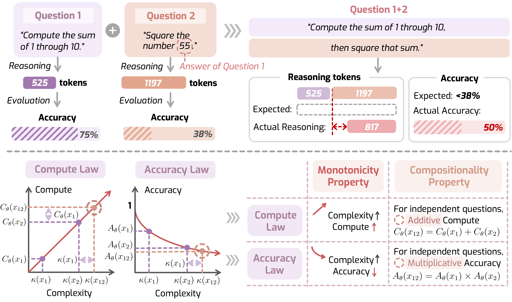

[ Full Image ]When Reasoning Meets Its Laws
NeurIPS 2025 Workshop on Efficient Reasoning · Oral · Best Paper NominationThe paper introduces LORE, a framework that defines how large reasoning models should scale their thinking and accuracy with problem complexity. It builds a benchmark (LORE-BENCH) to test two key properties—monotonicity and compositionality—and finds current models are mostly monotonic but not compositional; fine-tuning to enforce the compute rule improves overall reasoning performance.